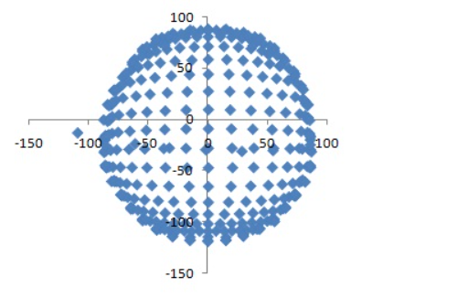

Análisis de datos funcionales (ADF) - Modelos de regresión
Curso de Estadística Espacial
Modelos lineales funcionales (Regresión Funcional)
Para explicar la variabilidad de una determinada variable con respecto a otras explicativas, consideradas como covariables, el análisis de varianza y la regresión lineal son los procedimientos que generalmente se utilizan. En este sentido el modelo de regresión funcional es la extensión natural del modelo de regresión usual al caso en el cual se cuenta con una variable respuesta funcional o con covariables funcionales (Aristizabal, 2011).
Regresión lineal funcional con respuesta funcional (ANOVA Funcional)
En términos formales (Ramsay & Silverman, 2005) se asume que se cuenta con \(\mathbf{G}\) “tratamientos” cada uno con un número \(\mathbf{N_g}\) de sujetos.
El modelo para la \(m\) -ésima función (curva) en el g-ésimo grupo (\((y_{mg}(t))\), esta dada por:
\[ y_{mg} = \mu(t) + \alpha_g(t) + \varepsilon_{mg}(t) \]
dónde la función \(\mu\) es la media general, \(\alpha_g\) representa la función media para cada “tratamiento” y \(\varepsilon_{mg}\) es la función de error en cada caso.
La tarea entonces, es establecer la matriz de diseño para lograr estimar los parámetros funcionales \(\mu\) y \(\alpha_g\), bajo la condición de que \(\sum_g \alpha_g(t)=0\) para todo \(t\) con el fin de garantizar la estimabilidad de los mismos.
En términos matriciales el modelo queda determinado como:
\[ y_{mg}(t) = \sum_{j=1}^{G+1} x_{(mg)j}\beta_j(t) + \varepsilon_{(mg)}(t) \]
\[ y(t)= X(t)\beta(t) + \varepsilon(t) \]
Cabe destacar que la matriz diseño X tiene la misma estructura que en el caso multivariado o univariado, la diferencia obedece a que el vector de parámetros \(\beta(t)\) y las predicciones \(X\beta(t)\), son vectores de funciones en vez de vectores de números.
Estimación - Mínimos cuadrados ordinarios
Para realizar el ajuste a través del criterio de minimos cuadrados ordinarios, se debe escoger \(\beta(t)\) que minimize la suma de cuadrados residual, así, para extender el principio de mínimos cuadrados al caso funcional, se reinterpreta la suma de cuadrados, así para extender el principio de mínimos cuadrados al caso funcional, se interpreta la suma de cuadrados residual (\(y_i(t)-X_i\beta(t)\)) como una nueva función, y entonces por el criterio de mínimos cuadrados ordinarios se debe minimizar :
\[ SSE(\beta) = \sum_g^G \sum_m^{N_g} \int \left[y_{mg}(t)-\sum_j^q x_{(mg)j}\beta_j(t)\right]^2 dt = \sum_i^n ||y_i(t)-x_i^t \beta(t)||^2 \]
Minimizando \(SSE(\beta)\) sujeto a la condición de \(\sum_{j=2}^{G+1} \beta_j(t)=0\) se obtiene la estimación de los parámetro funcionales \(\hat{\beta}(t)\).
Al igual que en el modelo lineal multivariado, la fuente primaria de información para investigar la importancia de los “tratamientos”, es la función de suma de cuadrados:
\[ SSE(t) = \sum_{mg} \left[ y_{mg}(t) - X_{mg}\hat{\beta}(t) \right]^2 \]
Esta función es comparada con la función de suma de cuadrados de los errores obtenida al utilizar solo la media general \(\hat{\mu}\) en el modelo:
\[ SSY(t) = \sum_{mg}\left[y_{mg}(t) - X_{mg}\hat{\beta}(t)\right]^2 \]
Así un camino para realizar la comparación, se establece utilizando la función del cuadrado de correlación multiple:
\[ RSQ(t) = \frac{SSY(t)-SSE(t)}{SSY(t)} \]
O calcular las funciones análogas a las que de una tabla ANOVE en el caso univariado.
Por ejemplo, la función de cuadrado medio del error:
\[ MSE = \frac{SSE}{df(error)}=\frac{SSE}{N-G} \]
Análogamente, la función de cuadrado medio de la regresión es la diferencia entre la suma de cuadrados total \((SSY)\) y la suma de cuadrados del error \((SSE)\), dividida por la diferencia entre los grados de libertad del error para los dos modelos (grados de libertad de la regresión):
\[ MSR(t)= \frac{SSY(t)-SSE(t)}{df(regresion)} \]
Finalmente se puede construir la función \(\mathbf{F}\) como:
\[ F = \frac{MSR}{MSE} \]
Básicamente, la mayoría de los estadísticos del análisis de varianza univariado son aplicables al problema funcional, esencialmente, porque el problema de análisis de varianza funcional, se puede se puede considerar como un análisis de varianza univariado (ANOVA) para cada valor específico \(t\) del dominio de la función. Sin embargo, bajo este enfoque la prueba \(F\) pierde algunas de sus propiedades, debido a que realizar una prueba \(F\) en cada tiempo \(t\) con un nivel de significancia determinado no implica el mismo nivel de significancia en una prueba conjunta.
Prueba de hipótesis - Prueba de Shen & Faraway
En el 2004 Shen y Faraway (Shen & Faraway, 2004), propusieron una prueba tipo \(\mathbf{F}\) para modelos lineales con respuesta funcional.
Esta es una extensión de la prueba \(\mathbf{F}\) multivariada al caso que la cantidad de mediciones crece rápidamente y puede ser utilizada para la comparación de dos modelos anidados cualesquiera.
Sin perdida de generalidad, se considera la comparación de dos modelos lineales \(\omega\) y \(\Omega\) , dónde \(dim(\Omega)=p\) y \(dim(w)=q\) , \(p > q\).
El modelo \(\omega\) resulta de una restricción lineal de los parámetros de \(\Omega\).
Así:
\[ H_0 : Y(t) = X_1\alpha_1 +\varepsilon(t) \quad \]
\[ Versus \]
\[ Ha: Y(t) = X_1\alpha_1(t) +X_2\alpha_2(t) +\varepsilon(t) \]
Sea
\[ \mathbf{F} = \frac{(rss_w - rss_w)/(p-q)}{rss_{\Omega}/(n-p)} ≈ \frac{traza(∑^ω−∑^Ω)/(p−q)}{traza(∑^Ω)/(n−p)} \]
con \(rss = \sum_{i=1}^n \int_t (y_i - \hat{y_i}(t))^2 dt\)
Asumiendo que el proceso de ruido \(\varepsilon_i(t)\) es gaussiao e independiente y con función de covarianza continua \(r(s,t)\) sobre unintervalo cerrado \(\tau\), entonces bajo el sistema de hipótesisi descrito, la estadística se distribuye como:
\[ \frac{\sum_{i=1}^\infty r_i \chi_{p-q}^2 /(p-q)}{\sum_{i=1}^\infty r_i \chi_{n-p}^2/(n-p)} \]
donde \(r_i\) es el i-ésimo valor propio ordenado de la función de covarianza \(r(s,t)\) y las variables \(\chi^2\) son independientes.
En su artículo los autores demuestran que la estadística tiene una distribución denominada distribución funcional con coeficientes \(r_i. i=1,2, ...,\infty\) y grados de libertad (\(p-q,n-p\)) . Así mismo, realizan la aproximación de esta distribución a la distribución \(\mathbf{F}\) de Fisher con grados de libertad \(f_1\) y \(f_2\):
\[ f_1 = \frac{(\sum_{i=1}^\infty r_i)^2}{(\sum_{i=1}^\infty r_i^2)}(p-q); \quad f_2=\frac{(\sum_{i=1}^\infty r_i)^2}{(\sum_{i=1}^\infty r_i^2)}(n-p) \]
En la práctica se observa \(y_i(t)\) sobre una grilla de puntos \(t_j, j=1,2,...M\), así, el factor de ajuste \(\frac{(\sum_{i=1}^\infty r_i)^2}{\sum_{i=1}^\infty r_i^2}(n-p)\) puede ser estimado por \(\frac{traza(E)^2}{traza(E^2)}\) , donde \(E= \hat{\Sigma}^{\Omega}\) es la matriz de covarianza empírica del ruido calculada con el modelo completo \(\Omega\).
Ejemplo
Experimento
La situación experimental llevada a cabo y que dió origen a la base de datos con la cual se realizan las aplicaciones, parte de que a un paciente se le mostraba un conjunto de palabras con carga emocional positiva (abrazo, paz, regalo), negativa (guerra, enfermedad, muerte), o neutra (número, roca), y también una serie de no palabras. Su tarea consistía en responder mediante un botón adyacente cuando aparecía únicamente una palabra. El número de pacientes total en el experimento fue de 48, de los cuales 30 son hombres y los restantes 18 mujeres.
La presentación de los estímulos y la realización de la tarea se hace en sincronía con el registro del electroencefalograma (EEG) con lo cual se obtiene la medición de la actividad del cerebro medida como la diferencia entre el voltaje máximo y la línea base preestimular (electrodo determinado) para cada condición experimental determinada, cada 4 milisegundos, obteniendo un total de 350 mediciones por paciente en cada uno de los 19 electrodos muestreados (dispuestos en ubicaciones establecidas por el sistema 10-20).
Sistema de referencia 10-20
El registro del EEG se realiza con distintos tipos de electrodos distribuidos según un mapa normalizado por la Federación de Electroencefalografia y Neurofisiologia Clinica, en base al sistema de coordenadas 10-20, que determina las coordenadas de cada punto de registro mediante porcentajes (10-20) de la distancia existente entre puntos del cráneo bien definidos. Esto permite el estudio de la misma región independientemente de las dimensiones y de la forma del cráneo
En el primer Congreso Internacional de EEG, que se celebró en Londres en 1947, se reconoció que era necesario un método estándar de la colocación de los electrodos utilizados en el electroencefalograma (EEG). Varias discusiones entorno al tema dieron lugar a la definición del sistema de electrodos 10-20 (Hasper, 1958). Desde entonces, este sistema de electrodos se ha convertido en el estándar para los clínicos y para el estudio de potenciales relacionados con eventos (potenciales evocados) en entornos no clínicos.
Con el fin de determinar bajo este sistema las coordenadas de los 19 electrodos utilizados en el experimento anteriormente descrito, se utilizaron las coordenadas de todos los lugares del electrodo en una superficie de la cabeza \(real\), sobre la base de las distancias a lo largo de la superficie (triangular) de la cabeza. La superficie de la cabeza utilizada fue construida a partir de la resonancia magnética canónica que se incluye en el paquete \(SPM2\) y las ubicaciones se expresan en coordenadas \(MNI\) (standard Montreal Neurological Institute) (Oostenveld & Praamstra, 2001)
En la figura se presenta la gráfica de las coordenadas de los electrodos bajo el sistema 10-20:
